my designs.
here goes my designs.
i'll update this in a short bit, check back in later. Update: I decided to go for a minimalistic design with my website. I'm thinking of choosing green as my primary color, perhaps different shades could work so there's neough contrast. I'm used to working with whites and blacks a lot so I'll find a way to implement them on the website. I'll have to find a 5th color so everything doesn't end up being as drab as some of my other sites, maybe I can include some kind of color switching mechanic as you scroll down.
wireframes

This is an initial mockup of what I want my website
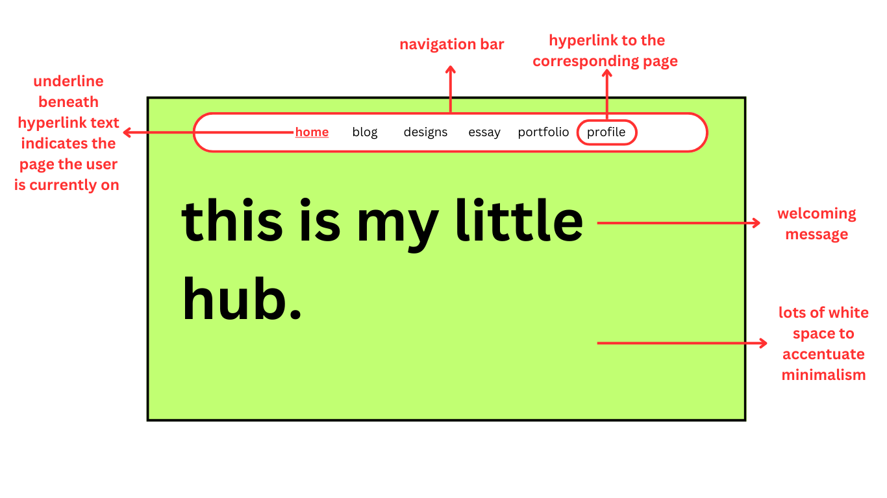 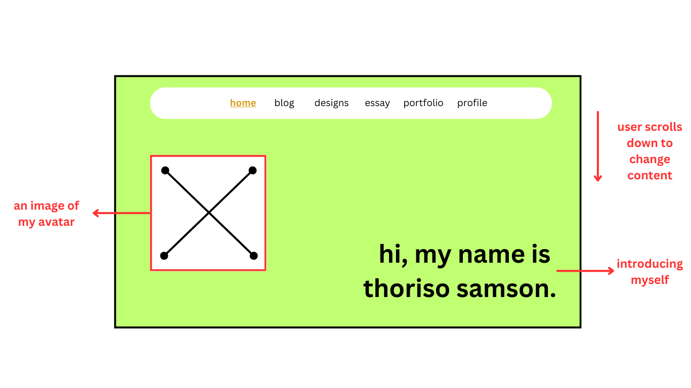 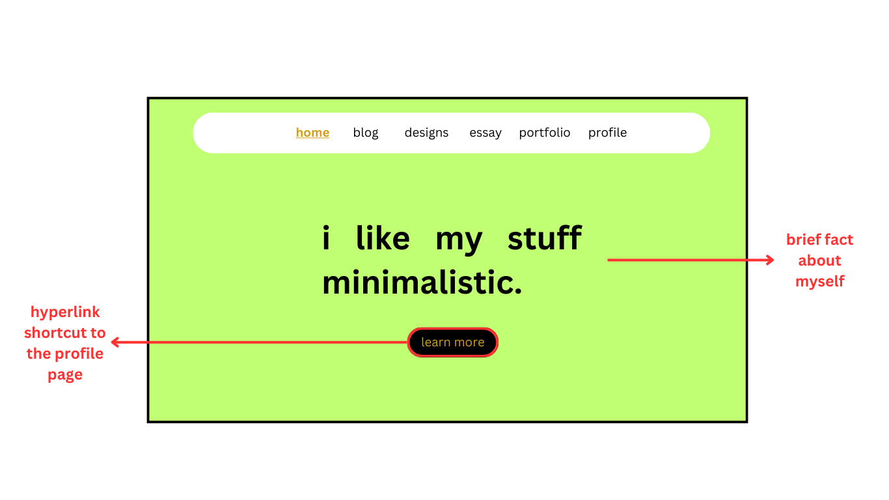 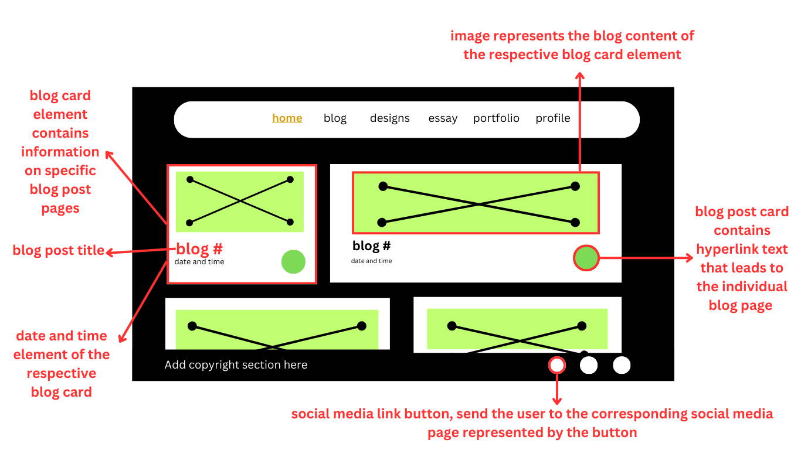 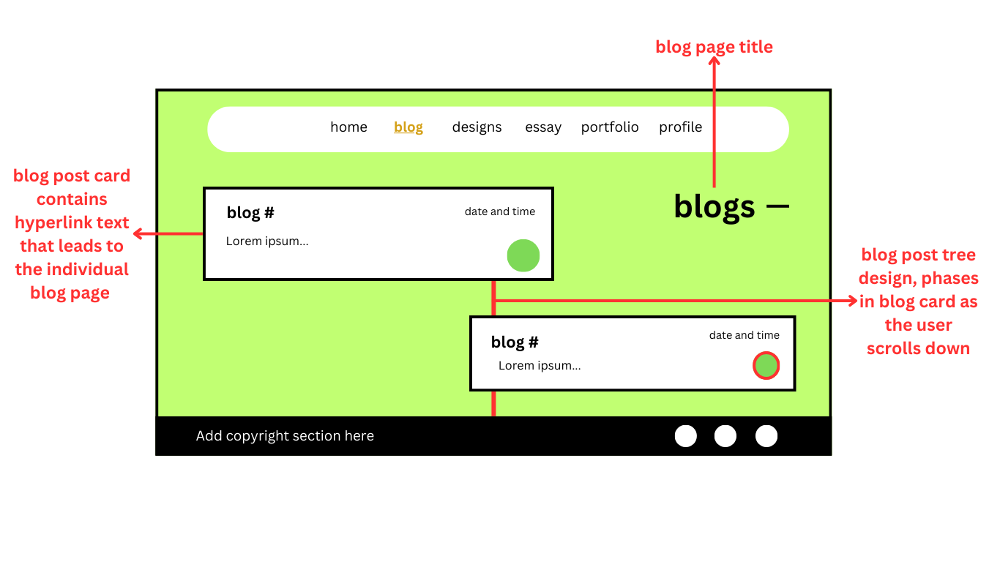 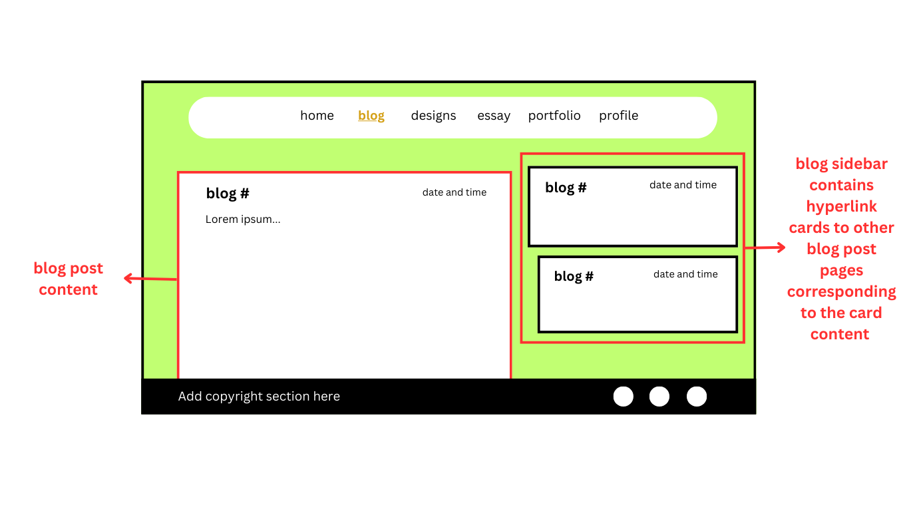 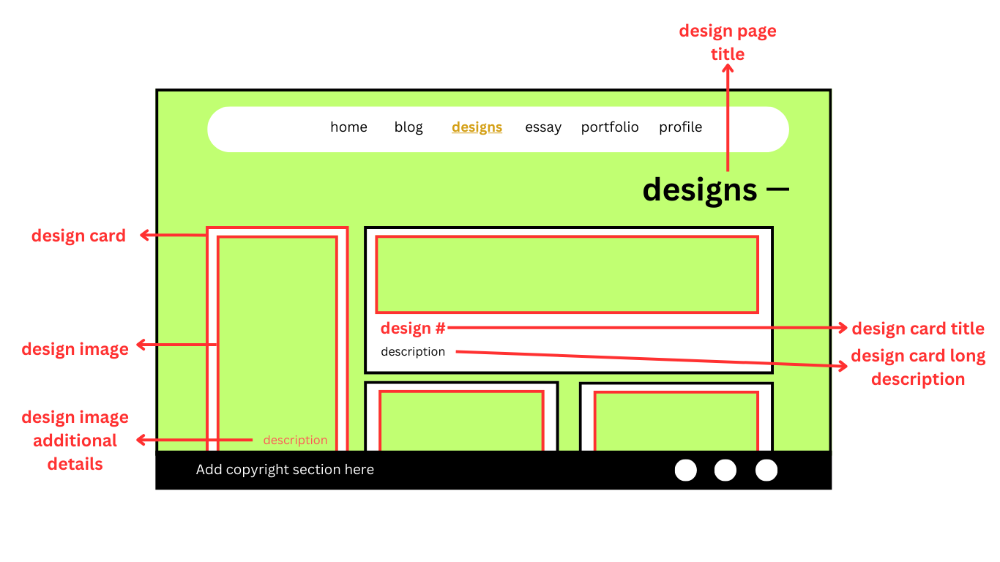 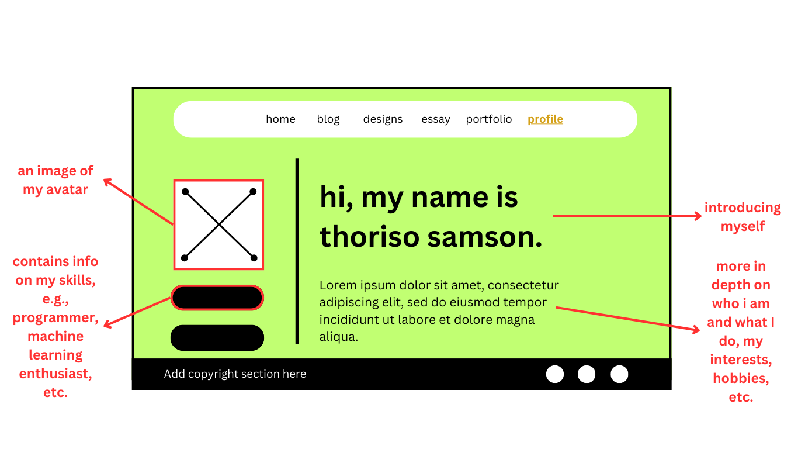 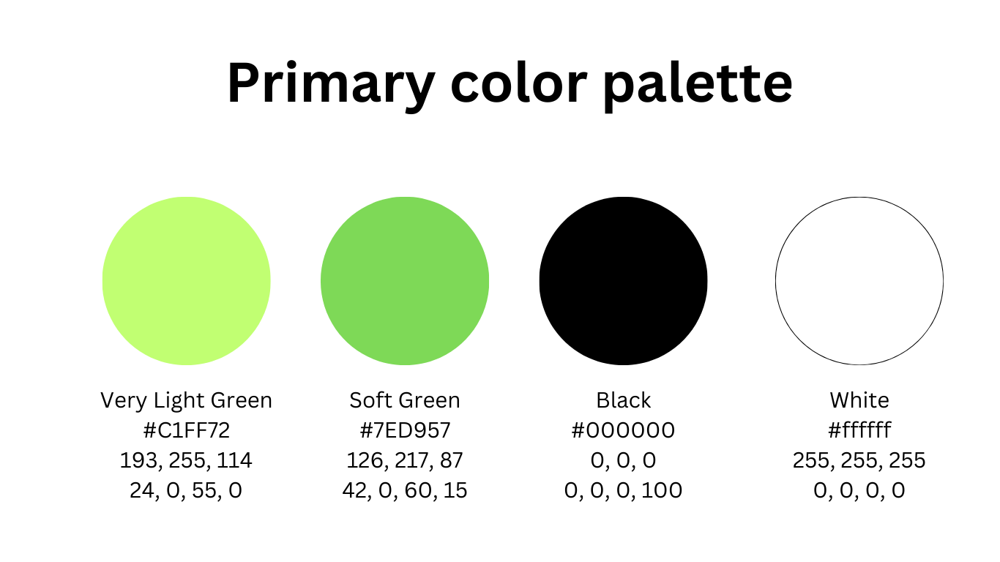
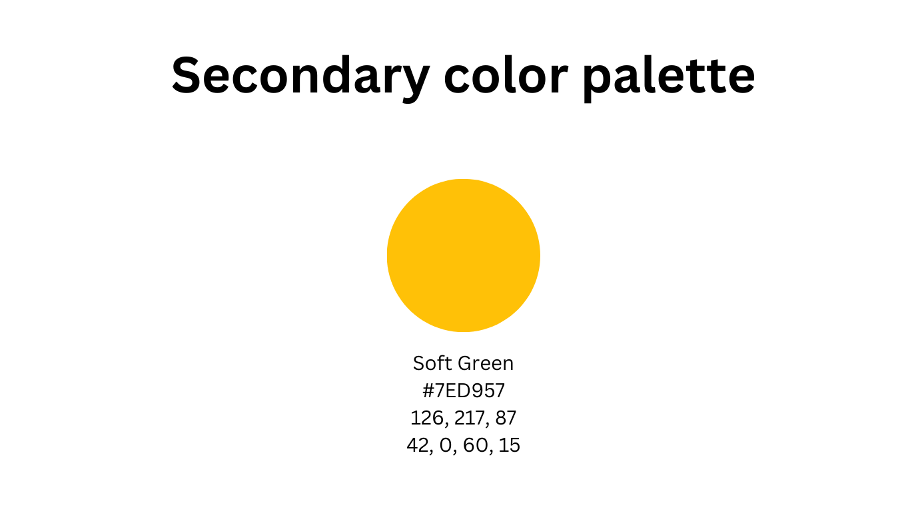
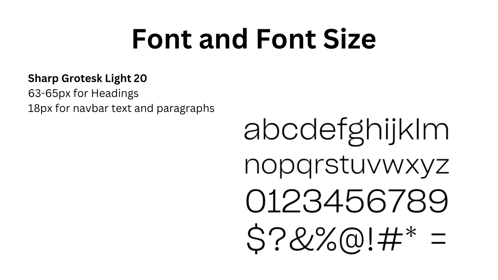